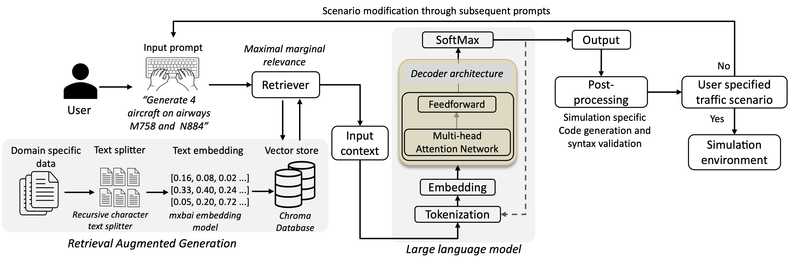
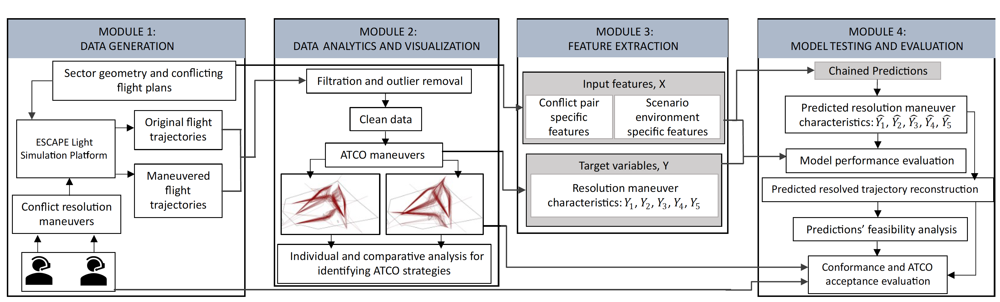
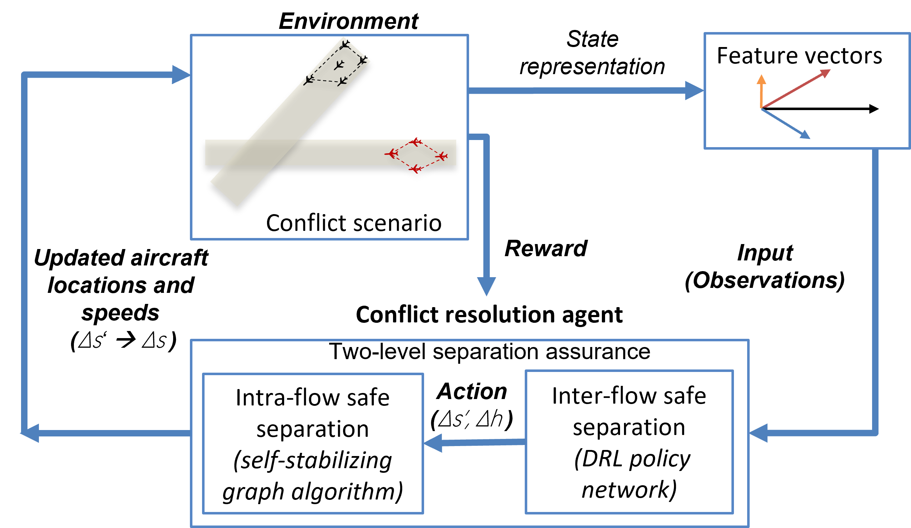

Publications & Projects
For a complete list of publications, please visit my Google Scholar profile: Google Scholar. A few recent projects are listed below:
Text2Traffic: Retrieval Enhanced In-Context Learning For Complex Air Traffic Scenario Generation
- Developed a RAG-enabled LLM approach to generate complex air traffic scenarios.
- Compared retrieval capabilities of models such as Cohere's Command r, Llama3.1-8b-Instruct, and GPT3.5-Turbo.
- The methodology enables quick and customizable air traffic scenario generation based on natural language inputs from the user.

Text2Traffic Methodology: Based on user input, Text2Traffic leverages Retrieval-Augmented Generation (RAG) to extract relevant sector information, including airways, waypoints, and aircraft types, from a domain-specific document, enabling the generation of the requested air traffic scenario.
Tools and technologies used
Towards conformal automation in air traffic control: Learning conflict resolution strategies through behavior cloning
- Developed a novel methodology incorporating supervised machine learning, to predict air traffic controllers' conflict resolution strategies.
- Developed an experimental interface in collaboration with EUROCONTROL, to conduct human-in-loop experiments with expert air traffic controllers from Singapore and France.
- Performed human-in-loop validation experiments to test the acceptability of machine-learning prediction for air traffic conflict resolution.
- Developed a reinforcement learning-based model to incorporate air traffic controller's knowledge into an agent capable of performing ATCO-like conflict resolution.

End-to-end conflict resolution pipeline using ATCO-conformal ML models.
Tools and technologies used
An Agent-Based Approach for Air Traffic Conflict Resolution in a Flow-Centric Airspace
- Conceptualized and investigated air traffic conflict resolution in flow-centric operations, where the traffic was modeled as intersecting flows.
- Developed a novel agent-based model to resolve conflicts in flow-centric airspace, where a deep reinforcement learning-based agent was responsible for resolving flow-based air traffic conflicts in enroute sectors.

A concept diagram for the interaction between the agent and the learning environment. Scenarios involving interflow and intra-flow conflict are generated and the vector representation of the extracted features is used by the agent to propose an action based on the learned policy, thereby reaching a new state and receiving a certain reward. The updated actions pass into a self-stabilizing algorithm which ensures intra-flow safe separation and outputs the updated location and speed of the aircraft in both flows.
Tools and technologies used
Continuous descent flight operations in Singapore Changi airport
- Worked with a team of 4 scientists on the development of an ML approach for continuous descent prediction for aircraft arriving at Singapore Changi airport.
- Liaised with THALES AirLab for integration of the ML methodologies into an air traffic control digital twin for evaluation by air traffic controllers.